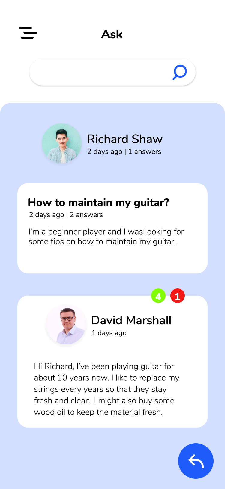

Hamburger Menu
This menu changes into an X shape when tapped by the user. The icon is designed to be fun and modern. The menu that appears when clicked allows users to naviagate the application.
Loading Screen
The loading screen page shows an animation of musical vibrations. It uses Master's signature blue colour and shows the progress above. This animation is very indicative of what MasterGuitar is about. It uses musical symbols within it's UI.
Slider
This type of slider appears on many pages of the MasterGuitar application. It's slick and simple to use. The animation requires the text color to change as well as the slider movement.
Pull-Up Menu
This menu also appears on many pages in the application. It's a simple to use, slider menu that hides the clutter and get's users to where they want to be faster.
Search Bar
The search bar animation is what appears when users click to make forum a search. It hides the clutter so that searching can be easier.
Playing a Song
The song playing portion of the application allows users to use a game-like setting to learn new songs. The notes appear on the screen and when they pass by, users must play along.
When you hit a correct note...
If you correctly play a note or a chord, this animation appears.
When you miss a note...
If you incorrectly play a note or a chord, then this animation appears. This is a similar to applications like Guitar Hero and Dance Dance Revolution.